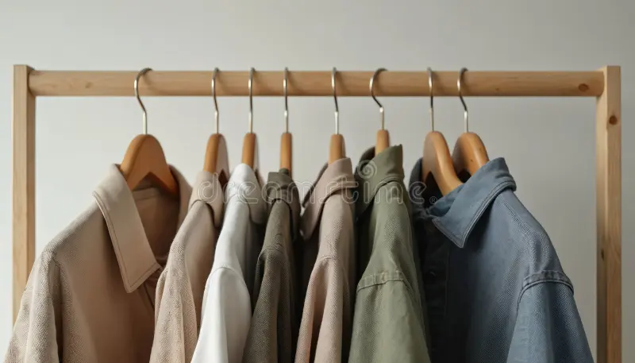

The fashion industry is one of the most polluting on the planet. Transforming the way we consume clothes is key to reducing our ecological footprint.
Building a sustainable wardrobe does not mean giving up style, but betting on quality over quantity, prioritizing timeless and ethically produced garments.
The most sustainable garment is the one that already exists in your wardrobe or the one that is produced respecting people and the planet.

Opting for natural fibers such as linen, organic cotton, or Tencel drastically reduces the use of toxic chemicals and microplastics in our rivers and oceans.
1. Audit your current wardrobe
Before buying anything new, rediscover what you already have. Organize, repair what is damaged, and donate or exchange those pieces that no longer reflect your style.